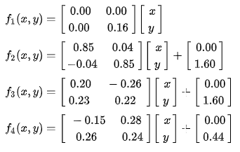

The Barnsley fern is a fractal named after the British mathematician, Michael Barnsley.
It uses four transformations:

Each iteration, a transformation is applied to the previous point, starting at (0,0).
We choose which one to apply randomly:
f1 with a chance of 1%f2 with a chance of 85%f3 with a chance of 7%f3 with a chance of 7%For a more real world understanding, f1 maps out the stem, f2 the smaller leaflets, f3 the largest left-hand leaflet, and f4 the largest right-hand leaflet.
Each transformation is defined by just 6 numbers, plus a probability for each of them. This means, the Barnsley fern "ruleset" can be represented by just 28 numbers. Changing these numbers can result in interesting, new fractals.
Give the transformations you want, or select a preset one!
f:
Xn+1 = a * Xn + b * Yn + c
Yn+1 = d * Xn + e * Yn + f
| a | b | c | d | e | f | p | |
|---|---|---|---|---|---|---|---|
| f1 | |||||||
| f2 | |||||||
| f3 | |||||||
| f4 |